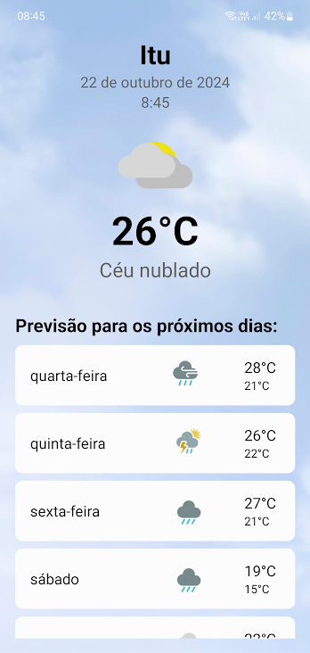

Jonathan
Desenvolvedor
Meu nome é Jonathan Marques Christofolei, tenho 22 anos e estou cursando engenharia de computação na UTFPR. Sou um desenvolvedor web/mobile e gosto de aprender diversas tecnologias.
Skills
Minha experiência em Engenharia de Computação me proporcionou habilidades interpessoais cruciais, como comunicação eficaz. Desenvolvi forte capacidade de trabalho em equipe, colaborando de forma respeitosa e eficiente com colegas de diversas áreas. Mantive uma postura proativa de aprendizado contínuo, sempre buscando novos conhecimentos e atualizações tecnológicas. Meu pensamento crítico e habilidades de resolução de problemas me permitem analisar situações de forma lógica e criar soluções inovadoras. Além disso, demonstrei alta adaptabilidade, ajustando-me rapidamente a novas tecnologias e ambientes de trabalho dinâmicos.

C/C++

Java

HTML

CSS

JavaScript

ReactNative
Formação

Engenharia de computação (cursando) - Universidade Tecnologica Federal do Paraná
Projetos
Ze das Caixas
Projeto de organização de diversos itens pela casa, separadas por caixas em diversos ambientes. Projeto realizado em React Native (front-end) e Firebase (banco de dados).

Previsão do tempo
Projeto de criação de um aplicativo para a previsão do tempo baseado na sua localização. Realizado com React Native (frontend) e WeatherBit (API para dados do clima).